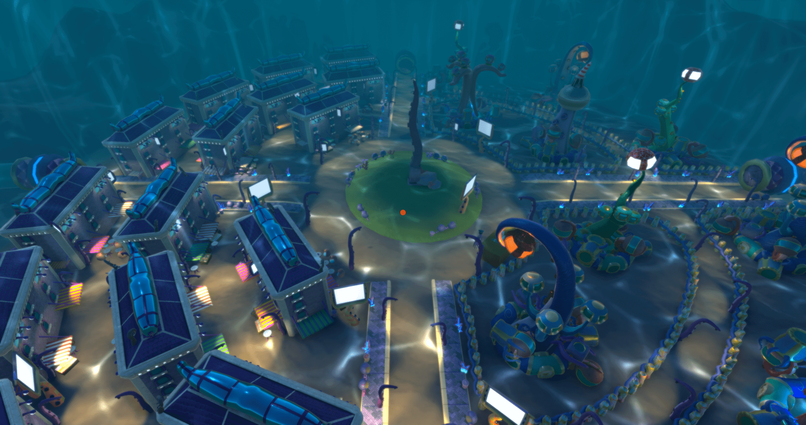
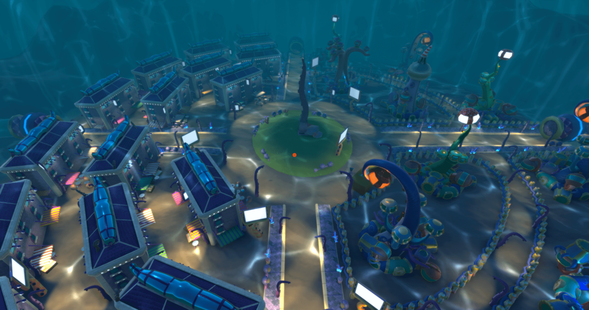

L'Empire Poulpoutou
Welcome to the Poulpoutou's Empire
Start a new adventure surounded by squids and play as the Empiror's son to discover what's behind this cute and innocently scene.
Poulpougrad is the main city of this nation, a huge city protected from externs threats, protecting utopia and happy lives. But, is it really like this ? Up to you to find out.
In a jazzy mood, feel free to interact with everyone and lead your own path. Get in contact with a lot of personnalities we've build up for this adventure.
The Emperor's Son is fed up of staying in his catle in the middle of this town, since his father doesn't want him to go outside of the castle. So he decides to leave and lead its way through the city, so his hangry father will send people to get him back.
You will have none lethal weapons created to fight, no one has to be killed is your way to do things.
Good Luck in Poulpougrad
It was a Student project we lead with Ludovic Gibault, me as the 3D Game Artist and Scrum Master and him as Lead Developper and Project Owner.
Yanis Ouglal : Concept Artist and 2D game Artist
Marine Capela : 3D Animator
Maxime Reninger : Scenarist
Lionel Bezamanifary : Dev
Hakim Loukil : Dev
Etienne Blachon, Hugo Caumon : Sound Designers/Compositor
It was on the best experience I've ever had, our project was the best among the others and we had the opportunity to present it at the FIJ (Festival Internation du Jeu à Cannes).
 



GGJ 2021 : Wisp
Welcome to WISP!
Discover a luxurious casino which encloses many secrets. You’ll be accompanied by Wisp, a small and mysterious will-o’-the-wisp. He will help you solve puzzles and find your tarots cards back, guiding you through the darkness of this place.
Let the gambling begin!
We did this game jam in the second biggest game jam's site in Europe, Sud Piccel in Montpellier, as the last year and it was really fun as always. Challenging and proving what we're capable of once again. For me it was to create a character and an environnement and making sense with it, I had the main gameplay idea, but we worked together on how to use it clerverly and making cool Level Design, to lead the player through different mechanics.
Gamejam's Team:
Anthony CUTTIVET: Unity Developer https://anthonycuttivet.com/
Cyril GAJAN: Unity Developer
Quentin BAUDRY: Sound Designer
Hélène LITZLER: 2D Game Artist & UI/UX Designer https://www.instagram.com/_kir.art/
Tom BONNOT: 3D Gamed Artist https://tombonnot.github.io

{kind=link}
Mix&Jam 2020 : MELEC
Rogue and Learn, Melec.
A Mix between education and Rogue Like, we want that learning the Periodic Table through game is easier. You are a crazy scientific synthwave boy going through a 80's futuristic world, destroying Beakers filled with bad component with a Test Tube, when defeated they'll drop some atoms that you will grab and stock into your weapon. The first atom will define your attack buff.
You will have to discover all atoms of the periodic table (named MELEX here; only the ones we could have add in the game) by merging two atoms rightly.
Completing the MELEX is the end of the game, but be careful, it won't be possible in one single run, even if you beat the radioactive boss.
Beating the boss will give you a choice between three rare atoms, the one you pick will be your first for the next run.
MELEC is the result of a combination from a Rogue Like, Shooter and Educative game, we also wanted to combined 2D and 3D graphics to dig deeper into the Jam's theme. Moreover we mixed good old Synthwave and rightful Chemistry (and that's pretty cool) !
Fun Fact : MELEC comes from a frenchy French translation of Mix and Jam (MÉLange Et Confiture).
Good luck AT-0M Merger !
Yoann MAISONNEUVE : Unity Developer - Git Master
Anthony CUTTIVET : Unity Developer
Hélène LITZLER : 2D Game Artist, UI/UX Artist
Tom BONNOT : 3D Game Artist, Level Designer
MELEC

Service Civique : Info Jeunes Draguignan
Recréation de la communcation de la structure, tous les éléments de communicaiton, création de nouveaux éléments graphiques pour le partage sur les réseaux ou encore par flyers. Rendre la communciaiton de la structure dynamique et attirant pour son public (12-30 ans), adapter les textes et proposer de nouvelles idées. Ces éléments ne sont pas les formes finales et peuvent être modifiées par la structure d'accueil, je les utilise ici pour présenter ce que j'ai personnellement fait. Je pense que j'ai réussi à transcrire une nouvelle identité intéréssante et qui saura accueillir son public, c'était un défi que de pouvoir retravailler une communcation d'une structure qui n'en avait pas changé depuis des années. En première image c'est l'avant du flyer. Respect des différentes chartes graphiques.
Arrière du Flyer
communcation pour un évènement en ligne de Pole Emploi
Affiche de présentation de la structure
Fond d'écran des posts en libre utilisation dans la structure
Affiche de communciation autour de Jobs d'été
Kakémono pour les futurs évènements mis en place par la structure

Affiche de communicaiton pour un évènement de la structure autour de la Mobilité Internationale

Ludum Dare 48 : Katakombs
A new social network has broken the Internet. Everyone talks about it, many teenagers join it and it becomes increasingly difficult not to hear about this site. However, it is said that to join this network, one must first succeed in finding it on the web. At the same time, many cases of disappearances were reported…
Explore the Internet of the late 90s and uncover all the mysteries surrounding the new Katakombs phenomenon.
Dev team - Cyril Gajan/ Anthony Cuttivet/ Yoann Maisonneuv
Graph team - Hélène Litzler/ Tom Bonnot
Sound Designer - Tristan Villard
Play Katakombs here
{kind=link}
GGJ 2020 : Just Fix it
Nothing much to say. Grap your tools, fix this messed up object in front of you and wait for the others.
Game jam's game we did in two days for the Global game jam in 2019.
Yoann Maisonneuve : Lead Dev
Roche NG, Guillaume Briant : Devs
Maxime Reninger, Guillaume Filiol de Raimond-Michel : Game Designers and UX/UI Designers
Tom Bonnot : Game Artist 3D and Level designer
Wil you fix it or what?
{kind=link}
GGJ 2019 : Rubik'Scare
Global Game Jam 2019 : What home means to you
Your Rubik's Cube home is all broken and you need to go and find your sister's and brother's to fix it. Choosing your own path through different level generated in function of which skills you have unlocked. A mini Rogue Like to build back your home.
It was a fine challenge to create a Rogue Like and we did it. It was fun and interessant.
Yoann Maisonneuve, Roche NG, Guillaume Briant : Devs
Alice Chouard, Tom Bonnot : Game Artists
Léo Pellegrino : Level Designer
Let's build back your home
{kind=link}
Inktober 2020
Here is a few tries during the Inktober in 2020, it was fun to do.
{kind=link}
Creative VR3D : Internship
During my internship at CreativeVR3D in Cannes, I had to make some level design and Level optimisation through their games. At firsdt it was optimistion in Darkness Roller Coaster, and then a lot of Level Design in an horror game "Bad Dream 2". It will be a VR game so I have to take this in consideration in my Level Design building because the VR is totally different from a normal gameplay. Be aware of some aspect of the VR and what is good or no for it. Worst Case Scenario, having motion sickness effect because of the game, this is the main problem about VR
{kind=link}
Some first try (2018)
Nunc blandit nisi ligula magna sodales lectus elementum non. Integer id venenatis velit.
{kind=link}
Another try (2018)
Nunc blandit nisi ligula magna sodales lectus elementum non. Integer id venenatis velit.

First Game Jam in 2018
Nunc blandit nisi ligula magna sodales lectus elementum non. Integer id venenatis velit.
{kind=link}
First work in 3D in 2018
Nunc blandit nisi ligula magna sodales lectus elementum non. Integer id venenatis velit.